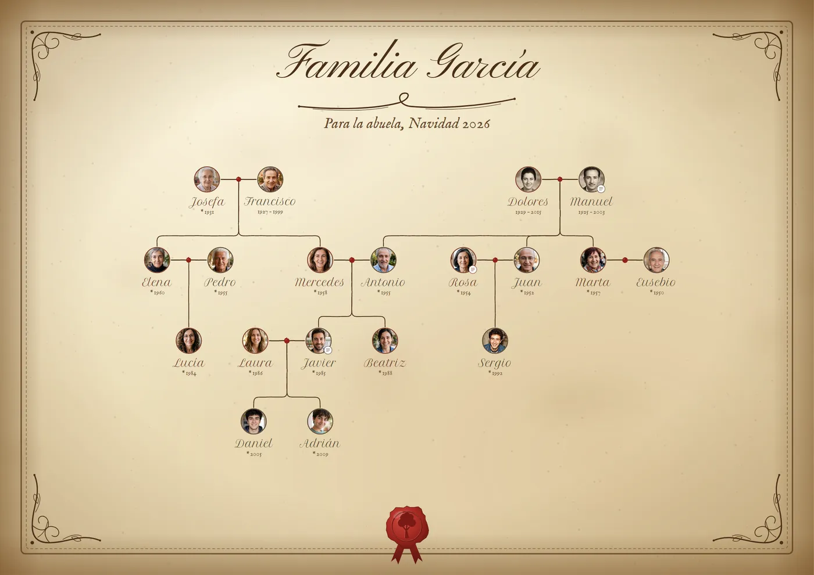
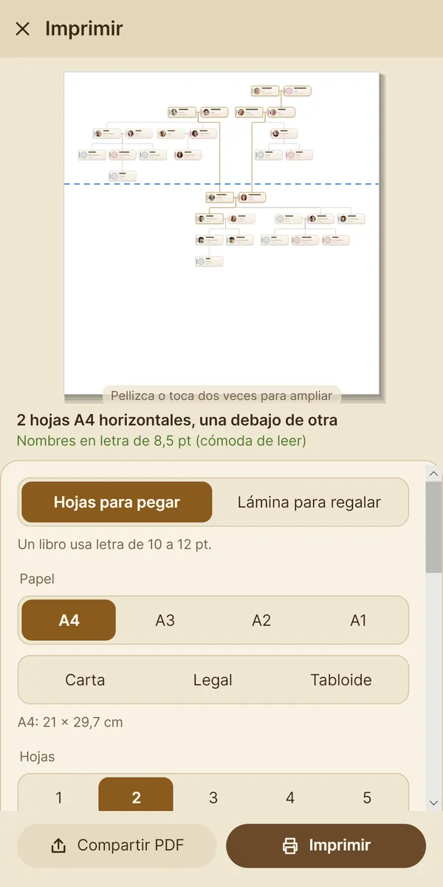
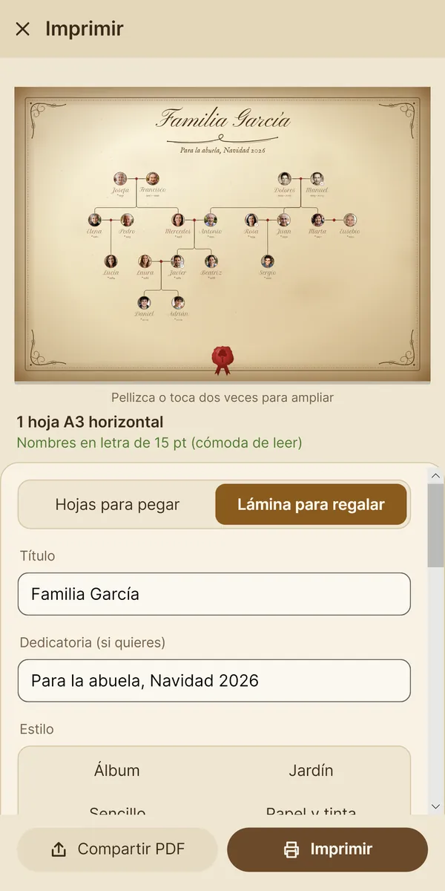

Cómo imprimir tu árbol genealógico en grande, en 50×70 cm
Un árbol genealógico luce de verdad en grande, enmarcado en el salón o en casa de los abuelos. Esta guía explica cómo elegir el tamaño, conseguir que se lean bien todos los nombres y llevarlo a imprimir sin sorpresas.

1. Elige el tamaño
Lo más práctico es imprimir el árbol al tamaño de un marco que ya exista, para no tener que encargar uno a medida. Los más fáciles de encontrar son 30×40, 40×50 y 50×70 cm. Ramo los tiene todos, además de A4, A3, A2 y A1.
| Tamaño | Para qué | Cuántas personas, como orientación |
|---|---|---|
| A4 | La impresora de casa | Hasta unas 35 |
| A3 o 30×40 cm | Un cuadro mediano o una mesa | Hasta unas 50 |
| 40×50 cm | Un cuadro para la pared | Hasta unas 60 |
| 50×70 cm | El cuadro grande del salón | Hasta unas 90 |
Las cifras son para tarjetas con foto y nombres de unos 9 puntos; dependen mucho de la forma del árbol. No hace falta calcularlo: Ramo te dice el tamaño exacto de la letra antes de imprimir.
2. Prepara la lámina en Ramo
- Abre el árbol, toca el menú y elige Imprimir.
- Arriba, elige Lámina para regalar y, en el papel, 50×70 cm (o el tamaño de tu marco).
- En Colocación del árbol verás, debajo de cada forma, a qué tamaño saldrán los nombres. La estrella ★ marca la que los deja más grandes.
- Escribe el título («Familia García») y, si quieres, una dedicatoria («Para la abuela, Navidad 2026»).
- Elige el estilo: Pergamino, Papel y tinta, Jardín, Álbum… Cada uno trae su marco, sus colores y su letra.


3. Haz que se lean todos los nombres
Como referencia: 8 puntos se leen de cerca, 10 a 12 se leen cómodos con el cuadro en la mano o encima de una mesa, y para leerlo colgado en la pared conviene pasar de 14. Si te sale pequeño, en Ramo puedes:
- Probar otra colocación: la horizontal suele ganar mucho con familias muy anchas.
- Quitar de las tarjetas lo que no necesites (la foto, los años o los apellidos). Ramo te dice cuánto gana la letra con cada cosa.
- Juntar las tarjetas o usar el margen fino junto al marco.
- Pasar a un tamaño mayor, o hacer una lámina por rama (la de los abuelos paternos y la de los maternos).
Mira la vista previa a pantalla completa y amplíala con los dedos: lo que ves es lo que saldrá.
4. Guarda el PDF y llévalo a imprimir
Toca Compartir PDF y mándatelo por correo o guárdalo en una memoria. El PDF de Ramo es vectorial: los nombres y las líneas salen nítidos a cualquier tamaño.
En la copistería o en una imprenta digital pide:
- Imprimir a tamaño real (100 %), sin «ajustar a la página».
- Papel fotográfico mate o estucado mate de 170 a 250 g: no hace reflejos detrás del cristal.
- Que lo corten al tamaño del marco, si la hoja es más grande.
Muchas imprentas en línea también aceptan el PDF tal cual para pósteres de 50×70.
¿Y si quiero imprimirlo en casa?
Elige Hojas para pegar: Ramo reparte el árbol en varias hojas A4 o Carta con las marcas para recortar y unirlas, y te enseña antes cuántas hojas hacen falta y cómo quedará la letra. Está también en la versión gratuita.
Las láminas para regalar son de Ramo completo (un solo pago). Con la versión gratuita puedes imprimir el árbol en hojas, con una pequeña marca «Hecho con Ramo».
Más guías